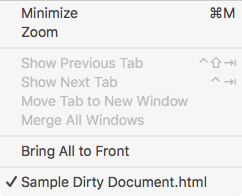

Using Tabbed Windows
Using tabbed windows with Balthisar Tidy can help you declutter your screen by grouping multiple document windows into a single tabbed window instead.
Note: Because this is a macOS function, this feature is only available if you are using macOS 10.12 (“Sierra”) or above.
To group all of your open documents into a single Window, do the following:
Select Merge All Windows from the Window menu. 
Discussion
macOS offers multiple ways to use and manage tabs. In addition to the Window menu functions, additional document opening and creating behaviors are standardized. Edited from the macOS documentation:
The behavior depends on the new System Preference under the Dock section to allow tabbing: Always / In Full Screen Only (Default) / Manually. Holding down option, in general, will invert the standard behavior. For each option:
When In Full Screen Only:
- When in Full Screen all windows opened will prefer to tab, including menu items (Cmd-N, Open Recents, etc), the open panel, and opening documents from Finder.
- When in Full Screen Holding down option will prefer to window (in a new space) instead of a tab.
- When on the Desktop things work exactly as they always have, with the additional ability to create tabs manually. See Manually.
When Always:
- When on the Desktop or in Full Screen opening similar windows should prefer to always tab, including menu items (Cmd-N, Open Recents, etc), the open panel, and opening documents from Finder.
- Holding down the option button will prefer to create a window instead of a tab.
When Manually:
- When on the Desktop or in Full Screen opening windows will prefer to just create a normal window.
- Holding down the option button will prefer to create a tab instead of a window.